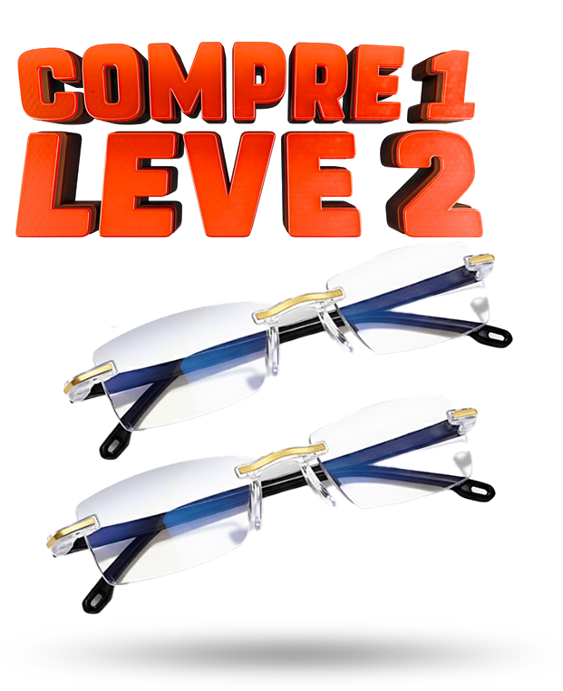

Uma empresa nova está tirando o sono das grandes marcas de óculos. Esse pode ser o fim dos óculos caros.
Há décadas as grandes marcas de óculos controlam quase tudo o que se vende nas óticas e cobram o preço que querem.
Mas esses preços abusivos estão com os dias contados.
A empresa óculos inteligente descobriu uma forma nova de criar óculos que ajustam o grau sozinho, por uma fração do preço que as óticas cobram.
Com esses novos óculos você não precisa trocar de lente e nem tão pouco gastar com exames oftalmológicos, eles se ajustam automaticamente para o grau que sua visão precisa.
Os Óculos Inteligentes possuem tecnologia de autoajuste nas lentes, entregando uma visão cristalina instantaneamente.
É muito fácil. Basta colocar, e as lentes se ajustam na hora ao grau que a sua visão precisa.
Sem necessidade de exames de vista. Sem atualizações de receita. Sem necessidade de múltiplos pares. Um único par se adapta a 100% das suas mudanças de visão automaticamente.
São projetados para todos que experimentam flutuações na visão, seja miopia ou hipermetropia.
A maioria das pessoas diz que parece mágica na primeira vez que os coloca.
Chega de exames de vista e trocas intermináveis de lentes. Você pode usá-los no escritório, dirigindo, lendo… Esses óculos se adaptam automaticamente, garantindo que você sempre enxergue com clareza onde quer que vá.
Imagine alternar entre objetos próximos e distantes com foco perfeito, sem precisar trocar de lentes ou de óculos.
Vivemos em um mundo digital onde as telas estão em toda parte. Com tanto tempo olhando para dispositivos digitais, seus olhos estão constantemente expostos à luz azul nociva que causa cansaço visual, dores de cabeça e problemas no sono. Os Óculos Inteligentes filtram a luz azul prejudicial.
Chega de alternar entre óculos de grau e óculos de sol! Os Óculos Inteligentes possuem tecnologia fotocromática que escurece instantaneamente na luz solar para proteção UV, depois volta a ficar transparente em ambientes internos — como ter dois pares em um.
Feitos com materiais premium de carbono e revestimento anti riscos, os Óculos Inteligentes são projetados para durabilidade, pesando menos de 15 gramas. Fazendo você esquecer que está realmente usando óculos.
Um óculos de grau comum custa de R$ 800 a R$ 2.000 na ótica, sem contar os exames oftalmológicos regulares e as atualizações de lentes. E quem precisa de um par para perto e outro para longe paga isso duas vezes.
Com a tecnologia que têm, seria de esperar que os Óculos Inteligentes custassem pelo menos o mesmo valor.
A boa notícia é que eles não custam nem um terço disso.
Os Óculos Inteligentes custam apenas R$ 247.
E tem mais: somente hoje, a empresa liberou a promoção Compre 1 e Leve 2.
Um par sai de graça!

Promoção válida por 24 horas ou enquanto dura o estoque.
COMPRE 1 E LEVE 2Lembra das grandes marcas que cobram o preço que querem? Boa parte do que se paga na ótica não é o óculos. É a marca, a loja, o aluguel do shopping e a comissão de cada intermediário no caminho.
Os Óculos Inteligentes não pertencem a nenhuma dessas marcas. São vendidos só pela internet, direto da empresa para a sua casa. Sem loja e sem intermediário, a economia vai para o preço e você termina pagando mais barato.
Os Óculos Inteligentes têm uma garantia de 30 dias, com devolução de 100% do dinheiro. Se eles não funcionarem para você ou se por algum motivo você não gostar deles basta acionar a garantia.
Entre em contato com a empresa pelo e-mail ou whatsapp e ela devolve todo o valor pago. Sem perguntas chatas, sem insistência, seu dinheiro volta imediatamente.
É um teste que nenhuma ótica oferece: Use o óculos por um mês, no dia a dia, e só fique com ele se gostar.
Os especialistas dizem que sim, é a primeira e única tecnologia assim no Brasil, milhões de brasileiros estão aproveitando essa promoção, não perca sua chance, faltam poucas horas para acabar.
São 4 benefícios que só os óculos inteligentes têm.
Os Óculos Inteligentes usam tecnologia avançada de lente dupla que se adapta em tempo real ao que você está olhando. Seja lendo de perto ou olhando para longe, as lentes se ajustam sozinhas — sem trocar de óculos, sem nenhum esforço.
Esqueça de ficar alternando entre óculos de leitura, óculos de grau e óculos de sol. Os Óculos Inteligentes substituem vários pares com uma solução leve e prática para o dia inteiro, projetada para se encaixar perfeitamente na sua rotina.
Quando expostas à luz solar, as lentes escurecem automaticamente para proteger seus olhos dos raios UV nocivos. Ao voltar para ambientes internos, elas ficam transparentes novamente — sem precisar trocar de óculos.
As lentes dos Óculos Inteligentes filtram a luz azul nociva de celulares, tablets e computadores, ajudando a reduzir o cansaço e a fadiga visual durante o uso de telas, sem alterar as cores ou a clareza.
Com uma armação moderna e minimalista e construção ultraleve, os Óculos Inteligentes são confortáveis o suficiente para usar o dia inteiro. Eles se encaixam naturalmente no seu rosto para que você possa focar no que está fazendo, não nos seus óculos.
Promoção válida por 24 horas ou enquanto dura o estoque.
COMPRE 1 E LEVE 2